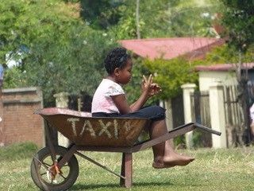
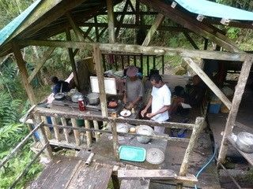
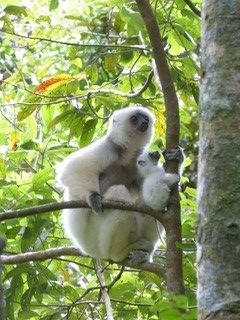

Nun ist schon mehr als ein Monat vergangen, seit ich wieder in der Schweiz bin. Aber die Bilder und Erinnerungen meiner Reise sind immer noch sehr lebendig. So folgt nun hier mein kleiner Madagaskar-Reisebericht
„Liebe Bodo

Wie ich schon geschrieben habe, hat alles perfekt geklappt, meine Reise war sehr gut organisiert von PRIORI. Ich war sehr zufrieden mit meinem Entscheid, mir überall genug Zeit zu lassen. Ich habe die freien Tage in Maroantsetra sehr genossen, aber auch in Sambava und Andapa, die ich mir anders vorgestellt hatte, war ich froh um die Zeit um diese Orte kennenzulernen. In Masoala und noch mehr in Marojejy habe ich immer wieder Touristen getroffen, die nur drei oder sogar nur zwei Tage dort geblieben sind und gleich ans nächste Ziel weiterreisen mussten. Ich war glücklich, so viele Tage bleiben zu können und ich war auch glücklich mit meinen Führern, Emile in Masoala und Maroantsetra und mit Lalaina in Tana, die ich ja schon kannte, aber auch mit Moses in Marojejy.
Dort war auch Dolf dabei, der Koch und ich habe in Madagaskar kaum einmal so gut und reichhaltig gegessen wie auf der Wanderung im Marojejy. Es ist unglaublich, was er in diesen einfachen Küchen alles zubereitet hat. Ich habe auch fleissig Madagassisch mit Emile gelernt. Aber auch mit Moses, der sich sehr gefreut hat über mein Interesse an seiner Sprache. So unterrichtete er mich während und nach den Wanderungen. Vor allem in Andapa konnte ich das gut gebrauchen. Dort war es nicht einfach, jemanden zu finden, der mehr Französisch sprach als ich Madagassisch, nicht einmal im Hotel. Aber die Menschen waren überall sehr nett und hilfsbereit und in den Hotels war ich sehr gut aufgehoben.
Ich war in den Städten oft allein oder in Tana mit Lalaina unterwegs, ging auf den Markt, kaufte mein Mittagessen oder einen Lambaoan und schaute einfach dem Leben zu. Ausserhalb der Hotels und Nationalparks habe ich in vier Wochen fast nie einen Vazaha getroffen. So waren die Menschen natürlich oft erstaunt über mich. Da hat mir mein Madagassisch oft geholfen. Zum Beispiel, wenn ich erklären konnte, dass ich spazieren gehe und Schmetterlinge fotografieren möchte.Die einzige Enttäuschung meiner Reise war, dass ich die Wale in der Bucht von Masoala nur kurz und immer von weitem gesehen habe. Das Meer war zu unruhig, dazu regnete es zu viel, haben die Leute gesagt. Schade, aber das kann man nicht planen. Dafür habe ich sonst viele Tiere gesehen. Zum Beispiel die Sifaka im Marojejy, eine Mutter mit einem Baby, wir konnten ihnen eine ganze Stunde von nahe zuschauen. Aber nicht nur wegen der Tiere sind die Nationalparks sehr eindrücklich, ich könnte viele Tage dort verbringen und immer wieder die gleichen Wanderungen machen.
Zum Schluss möchte ich mich noch einmal bei Ihnen und dem ganzen Team in Tana herzlich für Ihre Unterstützung und die Planung meiner Reise bedanken. In meinem Alter mache ich nicht mehr zu viele Pläne. Aber wenn ich gesund bleibe, möchte ich sehr gerne nach Madagaskar zurückkommen.
Mit herzlichem Gruss“
Rolf Z.